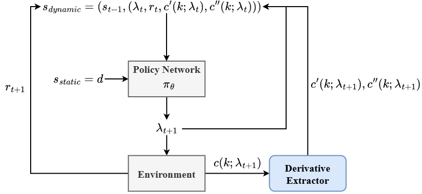

Abstract
Hyperparameter optimization (HPO) is a fundamental yet costly challenge in machine learning: finding the right hyperparameter configuration often requires evaluating dozens of candidate configurations, each demanding a full or partial training run. Reinforcement learning (RL)-based HPO methods, such as Hyp-RL, have shown promise by learning a sequential decision policy over the hyperparameter space. However, existing RL-based approaches treat each configuration evaluation as a black-box query, discarding the rich temporal structure embedded in the learning curve produced during training.
In this project, we propose a learning curve-informed RL framework for HPO and explore two directions. (i) Derivative-informed state representation: We augment the agent's input at each step with explicit first- and second-order derivatives of the observed learning curve, providing structured inductive bias about whether a configuration is still improving, decelerating, or plateauing, at zero additional evaluation cost. (ii) Cross-dataset policy transfer: We investigate whether pre-training the LSTM policy across multiple datasets can yield an agent that generalizes to unseen datasets without restarting from scratch. Empirically, on the homogeneous LCBench benchmark the derivative features yield no measurable gain, whereas on the heterogeneous Kaggle Playground Series they give the curve-informed agent a consistent edge over its curve-free ablation—indicating that learning-curve derivatives help precisely when curve shapes vary across configurations.

Framework extending the Hyp-RL formulation with a derivative-informed state representation.

Performance comparison of hyperparameter optimization methods across different training budget constraints.
BibTeX
@article{liao2026learning,
title={Learning Curve-Informed Reinforcement Learning for Efficient Hyperparameter Optimization},
author={Liao, Han-Syuan and Tsai, Cheng-An and Yu, Yi-Xiang},
journal={535510 RL Team Project Final Report},
year={2026},
url={https://github.com/}
}